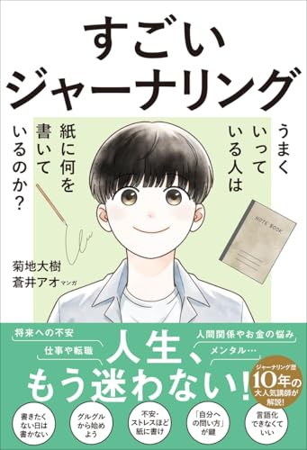
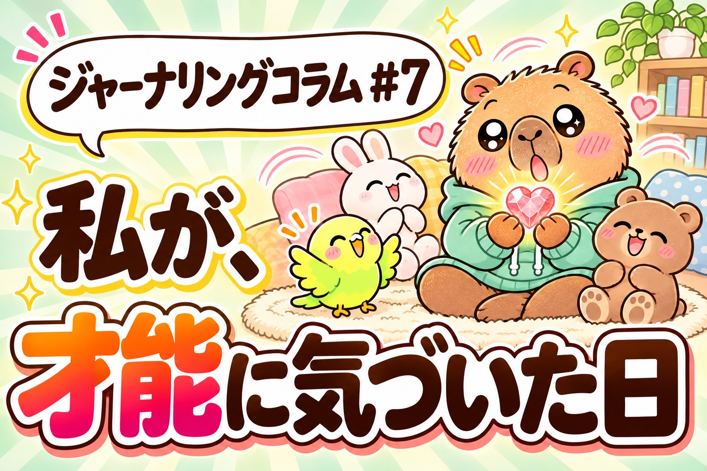
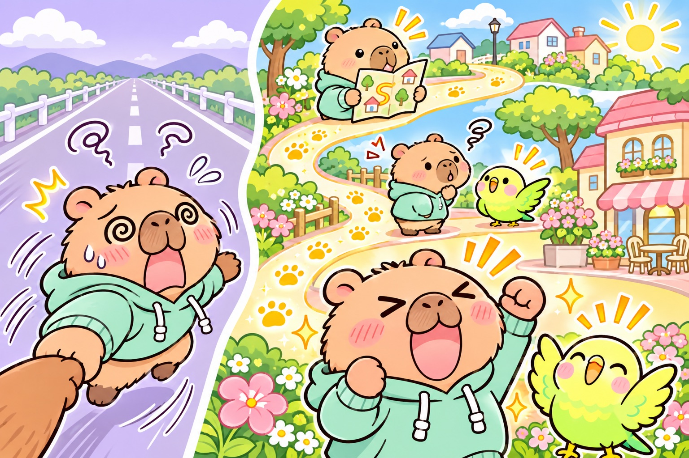
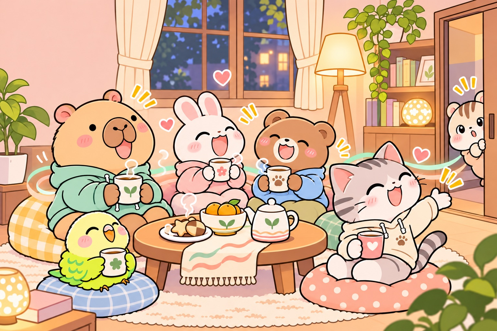
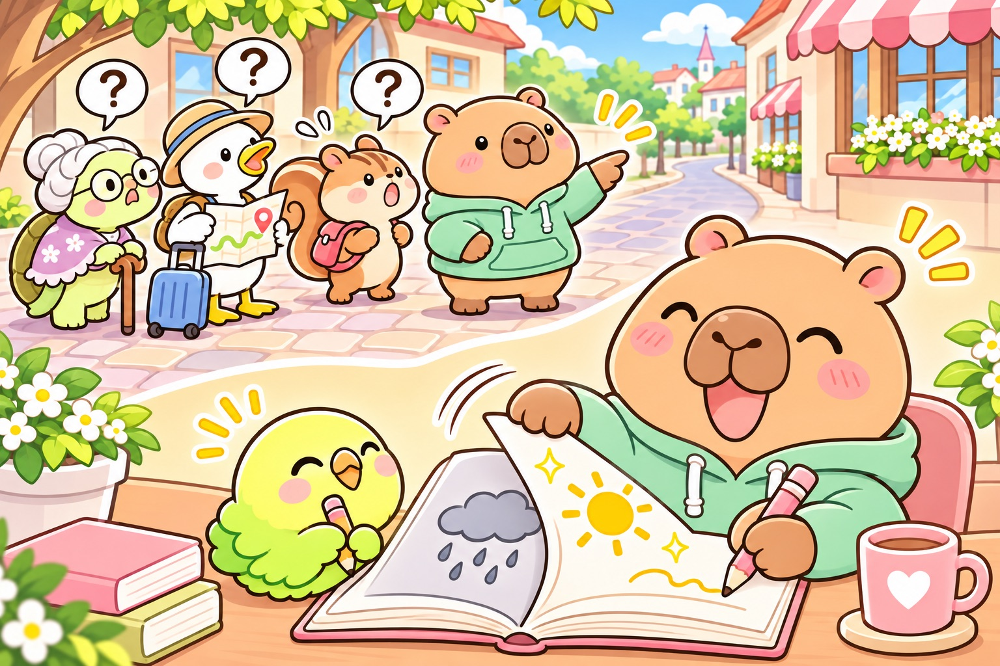
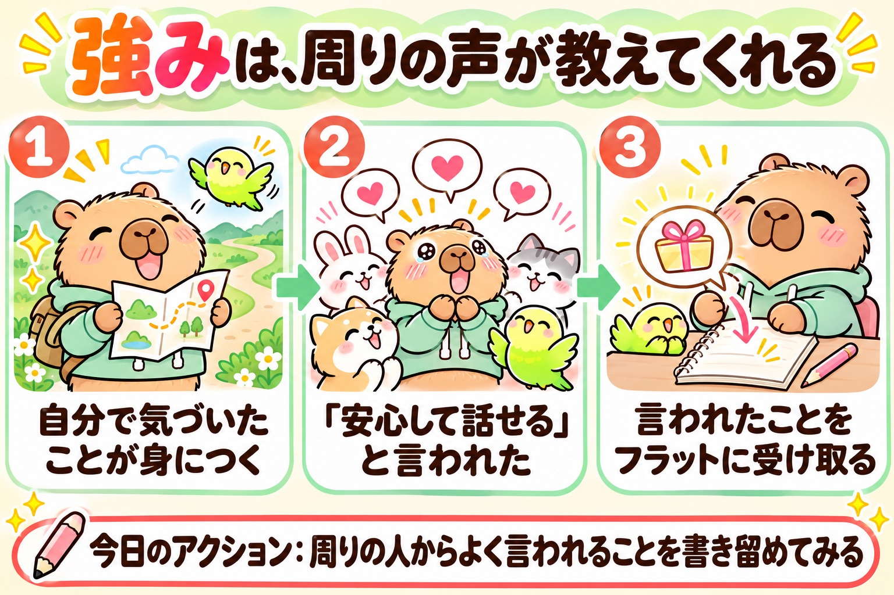

すごいジャーナリング
すごい
ジャーナリング
うまくいっている人は紙に何を書いているのか？
菊地大樹（マンガ：蒼井アオ）サンクチュアリ出版
昨日に続いて、もう一度開きました🦫 「才能」の章に、今日の話の裏側が書いてありました。

梅田オフィスのオフ会に出かける前に録った、今朝のおけもんです🦫 見ても聴いても、どっちでもどうぞ😊
♪ BGM：Morning／しゃろう
そんな方、いませんか？
はい、まさに私でした🤣
みなさん、おはようございます！
11月27日、金曜日。おけもんです🦫
今日もジャーナリングコラム、やっていこうと思います🙌
昨日の「書けば、あなたの才能が見つかる。」に引き続いて、テーマは「自分の強みに気づこう」。
昨日予告したとおり、今日は私自身がどうやって自分の強みに気づいていったのか、実体験をもとにお話ししますね😊
ストレングスファインダーは、「ついやってしまうこと」「息を吐くようにやってしまうこと」＝才能に気づいていくためのもの。
それを日々書き留めていくと、目に見えないものが少しずつ浮かび上がってきます。いわば「自分の取説」を作っていくイメージですね😊
そのために大事なのが、日々の行動を書き留めたり、自分の中で気づいたりして、臨場感を高めていくこと。
だから私も、セッションの時はなるべくみなさんのエピソードをお話ししてもらうようにしています。
「あなたはこういう人ですよ」と人から言われるのも、悪いわけではないんです。
でも人って基本的には、自分で気づいたことしか身につかないんですよね。
私がよく出すたとえ話があります。
人に道案内してもらって連れて行ってもらった道って、「じゃあもう一回行ける？」と言われたら、なかなか行けないんですよね。私はもともと道が苦手なのもあって、ほんまに覚えられません🤣
でも逆に、自分で迷いながら、あっちゃこっちゃ行きながら、人に聞きながらたどり着いた道は、ちゃんと覚えてるんです。
自分ごとになって、身になるんですよね。

ストレングスファインダーの説明は、もともと抽象的に書かれています。
それを自分ごとに落としていくために大切なのが、日々のエピソード。
何があったか、どう感じたかを書いていくと、
って、少しずつ気づいていけるんです😊
ここで、私自身のお話をさせてくださいね。
私はストレングスファインダーで「調和性」という資質が高いんです。
争いを避けて、物事を平和的に進める。基本的には穏やかな資質で、イメージは「エアコン」だと思ってください😊
不特定多数の人がいるお部屋で、「みんなにとってちょうどいい温度ってどれくらいかな」と調整しながら、みんなが心地よく過ごせるようにする役目。
人と人との間をつないだり、折衷案を見つけたりする資質です。
……と、説明はできるんですが。
正直、私自身はずっとピンときていなかったんです🤣
認定コーチになってからも、
と、活かしている感覚がまったくありませんでした。
そんな私に気づきをくれたのが、周りの方の声でした。
ありがたいことにオフ会をたくさんさせていただいて、セッションでもいろんなご感想をいただく中で、すごく多かったのがこんな言葉です。
セッションの感想も、私は「強み発見の専門家」としてやらせてもらっていたので、
「強みが見つかってよかった」「やりたいことが見つかった」が多いのかな、と思っていたんです。
ところが、いちばん多かったのは「この人やったら、安心して喋れるな」という言葉でした😳
さらに、ストレングスに詳しい方とお話しした時にも、「これだけ調和性を使っている人に出会ったのは初めてです」と言っていただいて。

自分では、ただ普通に、そのままやっていただけなんですよね。
それが結果的に周りの方の役に立って、感謝の言葉をいただく機会が増えていきました。
私も、自分のことが全部わかっているわけでは全然なくて🤣
周りからのフィードバックや、自分が行動したことを少しずつ振り返る中で、「私ってこういう人なんやな」「人からはこう思ってもらえてるんやな」と気づいていっています。
そしてそこから、やりたいことも少しずつ見つかっていきました。
人の強みを発見するのも、もちろん楽しいんです。
でもどちらかというと、みんなが安心できる場所、みんなが楽しいと思ってくれる場所を作るのが楽しいんだろうなって。
普段なかなか自分の発言ができない人や、勇気を出してオフ会に行くのが怖いという人が、「ここに来てよかったな」「また来たいな」と思ってくれるような場所。
一時期、よくこんな話をしていました。
いつもオフ会で意識していること＝ついやりたくなること。
それに気づかせてくれたのも、やっぱり周りの方の声でした😊
昨日の続きにもなりますが、自分の強みに気づくって、実は「ちゃんと受け取ること」だったりします。
人ってどうしても、褒められた時に
って、受け取らずに返してしまうことがありますよね。
でも昨日もお話ししたとおり、それは周りの人からのプレゼントなんです🎁
とはいえ、「絶対ちゃんと受け取らないとダメ！」と思うと、それはそれですごくしんどい。そうしないといけないわけでもないんです😊
私が大事だなと思っているのは、物事をフラットに見ること。
いい・悪いではなく、
と、ただ状態として観察する。気づく。
それを入れるだけで、「私には強みはない」「いいところはない」と思っていたのが、少しずつ変わっていくんです。
私はよく「上書き保存」と言うんですが、ちょっとずつ塗り替わっていく感じがあるんじゃないかなと思います✨

というわけで、今日のアクションはこちらです🙌
たとえば私は、なぜかよく道を聞かれるんですよね🤣
すごく忙しい時でも聞かれるし、外国の方にも聞かれるし、おばあちゃんにもよく話しかけられます。
こんなふうに、自分では気づかないことでも、周りの人の関わり方から、自分の強みに気づくことがあるんです。


昨日に続いて、もう一度開きました🦫 「才能」の章に、今日の話の裏側が書いてありました。
ダイキさんは、心理テストやチェックテストで「あなたにはこんな才能がありますよ」と言われても、心に深く刺さらず、数日後には忘れてしまうことがほとんど、と書いています。
……今日の「道案内してもらった道は覚えられない」と、同じ話ですよね😂
そしてもう一つ。ダイキさんは、自分の才能に気づくのは正直むずかしいからこそ、普段から人の才能を見つけて、「あなたのここが才能だよね。すごいよね」と伝えるようにしたそうです。そうしたら、人生が楽しくなった、と。
受け取る人と渡す人がいる場所って、それだけで「安心して喋れる」場所になっていく気がします🤝
参考にした資料：菊地大樹『すごいジャーナリング』（サンクチュアリ出版）p.216〜219「才能に気づきにくい理由①」
「調和性」って、公式にはどう書かれてるの？を知りたい方へ👇
🌐 ギャラップ公式「調和性」の資質 対立よりも、みんなが同意できるところを探す。「私たちは全員おなじ船に乗っている」という見方の資質 👉 タップして公式ページを見る Gallup（クリフトンストレングス日本語版）ご自身のペースで大丈夫です。毎日絶対にやらないといけない、なんてことはありません🙌
みんなの投稿を見て「あ、そういうことなんや」と気づきを増やすのもいいですし、ノートに1行だけ書いてみるのも素敵です。
やっていくうちに、いろんなことが見えてきますので、ぜひこの場を楽しく使ってもらえたらうれしいです😊
私はこのあと、梅田オフィスでオフ会です！
今日も1日、いろんな方と関わらせていただける、ありがたい日だなぁと思っています。
中身は明日のお楽しみ😊 「こんなテーマで話してほしい」という質問やリクエストも大歓迎です！